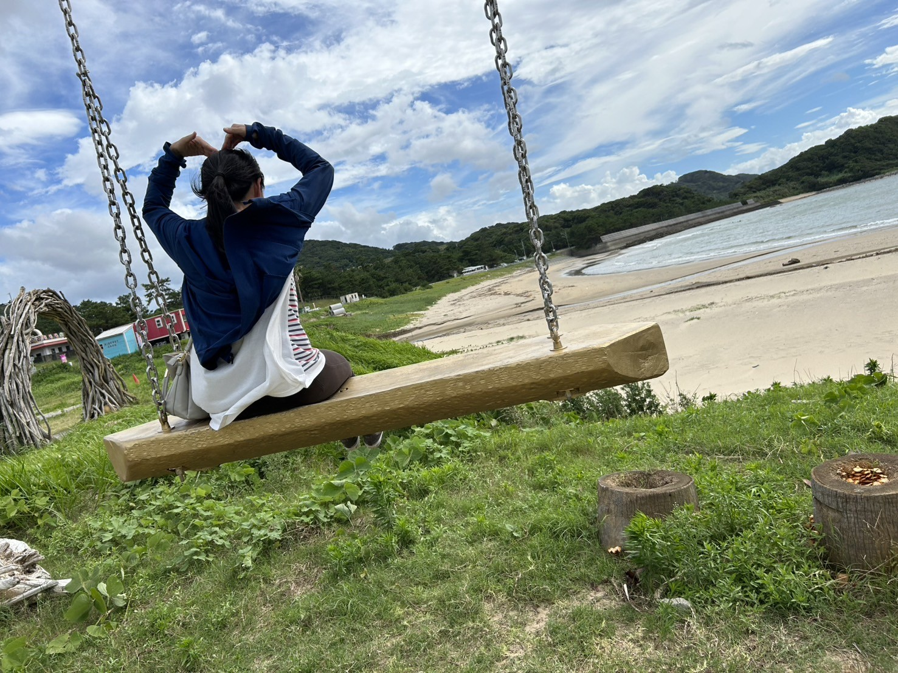

尼僧が”苦しみの原因”を見抜き、
心を整えます
苦しみや悩みは、一人で抱え込むほど大きく感じられることがあります。
誰にも言えないお気持ちでも、安心してお話しください。
仏教の教えや人生経験を通して、あなたの心が少しでも軽くなるお手伝いができれば幸いです。

尼僧として修行を積み、
保育士・幼稚園教諭として多くの子どもや保護者と関わってきました。
仏教の教えと人生経験を通して、
心に寄り添うご相談をお受けしています。
職場・家族・友人との悩み
育児の不安や孤独
手放せない思いや苦しみ
将来や人生への不安
尼僧として、そして保育士として多くの人の悩みと向き合ってきました。
表面的な励ましではなく、あなたの中にある苦しみの原因を一緒に見ていきます。
私は尼僧として修行を積み、阿闍梨位を取得
さらに保育士・幼稚園教諭として子どもと関わってきました。
また、シングルマザーとしての経験や家庭環境に悩んできた過去があります。
これらを通して『苦しみとの向き合い方』を実体験で学んできました。
《聞く》だけでなく必要であれば、本質的な部分にも触れていきます。
「なぜ苦しいのか」
「どうすればぬけられるのか」
仏教の視点も交えながらあなたに合った形でお伝えします。
ココナラにてオンライン相談を承っております。
お気軽にご相談ください。
仏教の教えや日々の気づき、
心が少し軽くなる考え方をnoteで発信しています。
よろしければご覧ください。
誰にも言えないことでも大丈夫です。
ひとりで抱え込まず安心してお話しください。